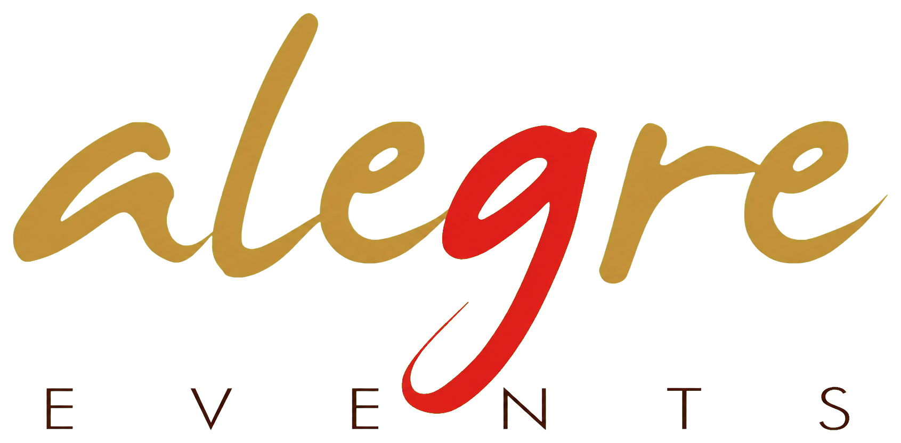
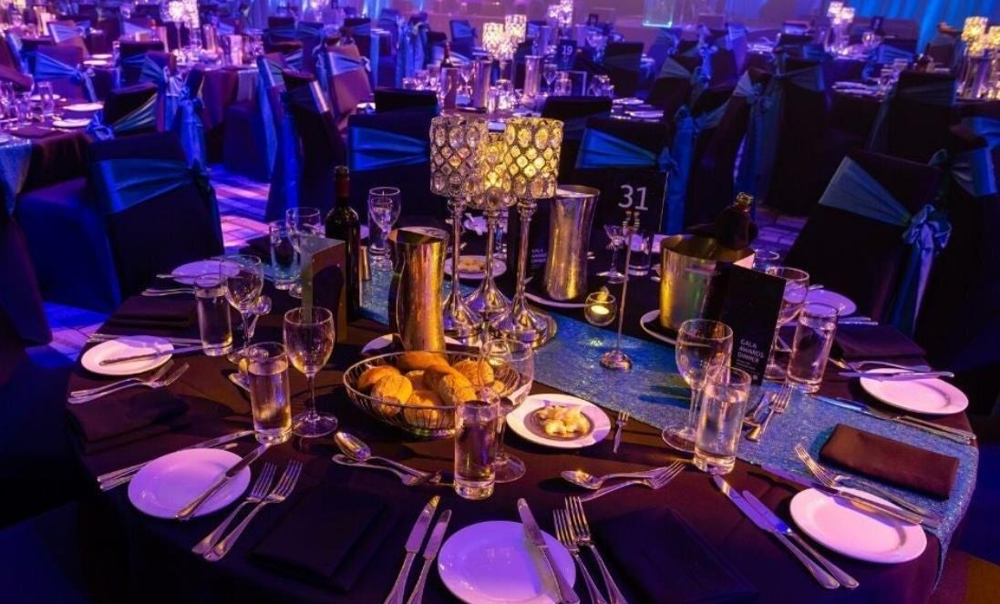
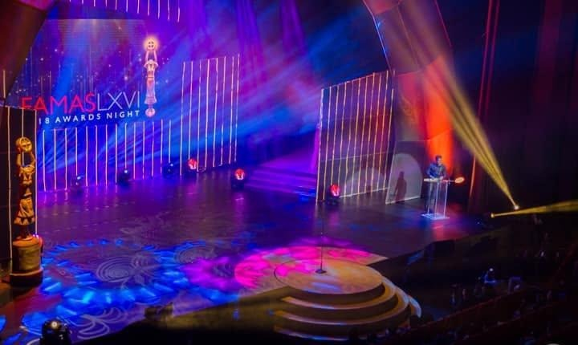
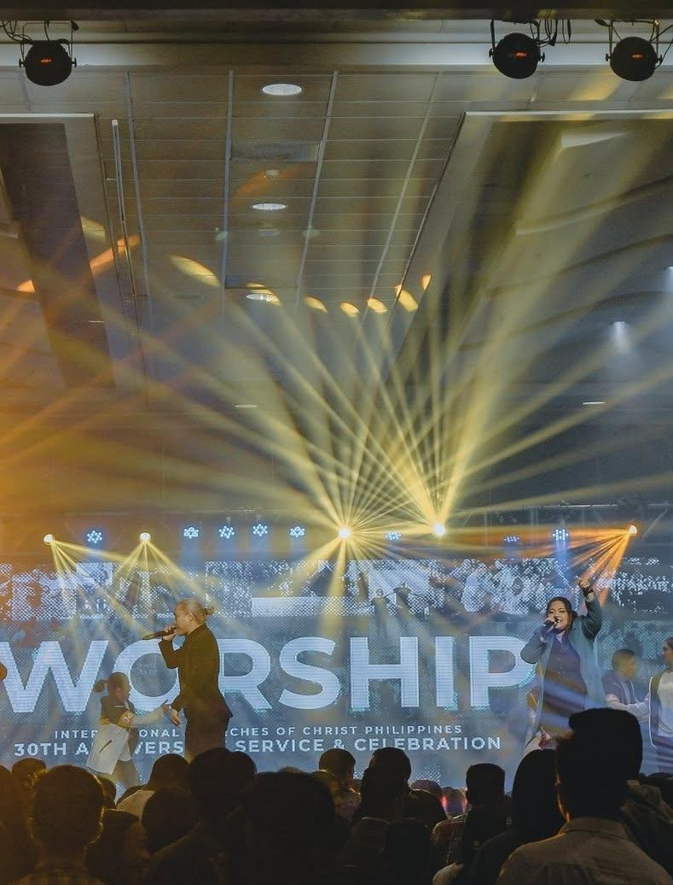
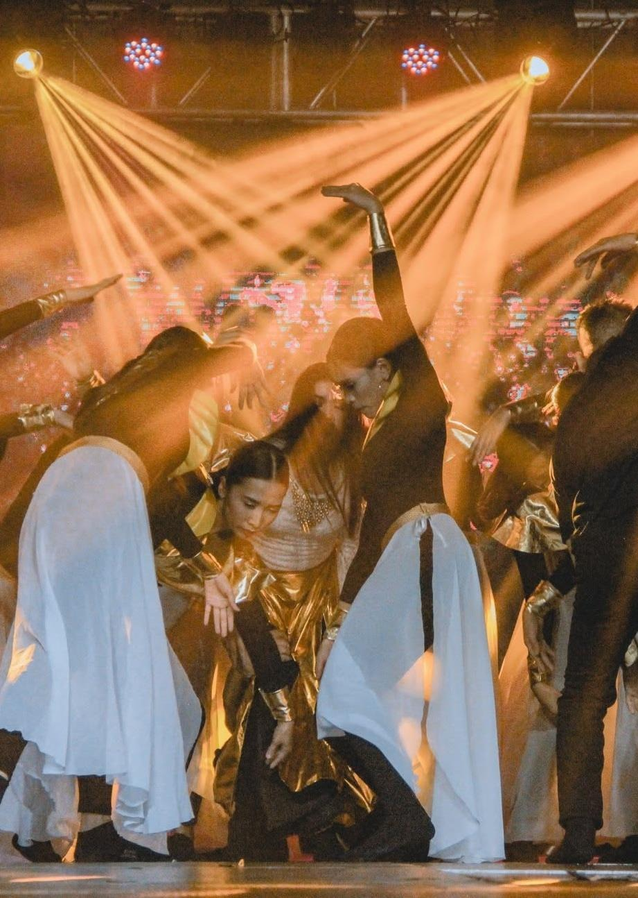
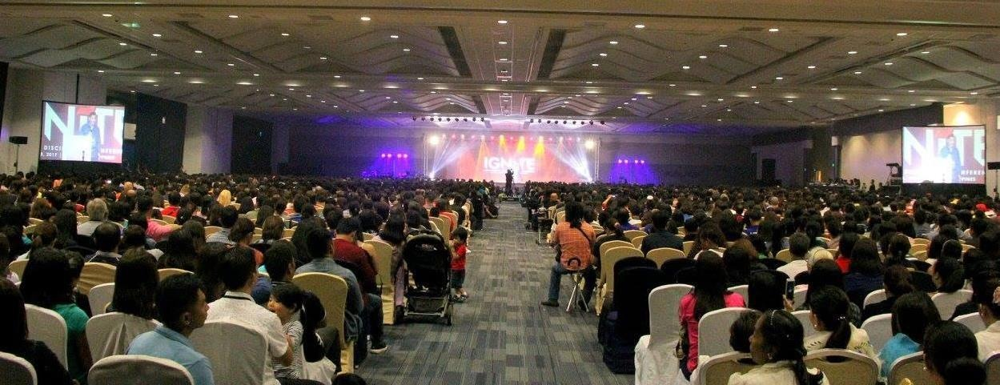
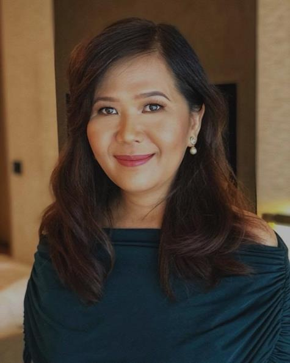

Strategic Event Architecture
Aligning objectives with business goals before a venue is booked, so every decision drives measurable outcomes.

Start a conversationPhilippines’ Premier B2B Experiential Partner · Est. 2007
Alegre Event Collective transforms brands’ most important moments into immersive, results-driven experiences—where creative vision meets operational precision.
Plan something extraordinary ↗
19 years of mastery
01 · Who we are
Founded by Susan Quinsay Montealegre, Alegre Event Collective—formerly Alegre Events Management—has spent 19 years at the intersection of creative vision and operational precision, transforming brands’ most important moments into immersive, results-driven experiences. The name Alegre means happy, colorful, and bright—and every event we craft leaves people feeling something extraordinary.
After a deliberate period of selective engagements, Alegre enters its 2026 strategic relaunch with elevated capabilities and a sharpened B2B focus.
“Every event is a story.
Our job is to make it unforgettable.”
02 · What we do
Aligning objectives with business goals before a venue is booked, so every decision drives measurable outcomes.
Environments that create emotional resonance, lasting recall, and genuine brand advocacy.
Ownership of the full lifecycle—from concept and staging to coordination and post-event wrap.
Live-stream production, virtual engagement, and digital amplification beyond the room.
Eco-conscious sourcing, waste-reduction protocols, and ESG-aligned logistics.
Engagement, satisfaction, and post-event reporting that turn experience into insight.
03 · Signature portfolio

National awards ceremony · 2018
The Theatre at Solaire. Grand stage design, dramatic lighting, VIP red carpet, national media coverage, and talent coordination for more than 30 industry icons.
Full-scale productionMassive Audience Engagement
Production Design and Direction
Dramatic Light Show

7,000 attendees · Stage · Sound · Talent · Logistics

Multi-day celebration and concert production

Thousands of delegates · Indoor arena · Full production
04 · Upcoming Events

You Are Invited
Where luxury finds its next story. Discover a landmark gathering for collectors, sellers, authenticators, restorers, and lovers of enduring design.
Buy · Sell · Authenticate · Restore · Invest · Collect
Event enquiries ↗
The visionary behind the collective
Founder & Chief Experience Architect
With over 20 years of mastery in corporate, VIP, and large-scale event management, Susan Quinsay Montealegre founded Alegre Events Management in 2007 with a singular conviction: every event should leave people feeling something extraordinary. Her career spans 200+ flawlessly executed events—from intimate boardroom dinners to national conventions of 7,000 attendees.
2015 Golden Globe Award — Best Event Service Provider
ISES Certified — Scotland Institute of Planned Events
De La Salle CSB — Professional Event Management
Philippine Best Companies — Seal of Excellence
Every event is a story.
Our job is to make it unforgettable.
05 · Our advantage
Over 19 years, we have cultivated a curated network of 100+ industry-leading partners—assembled to deliver the perfect team for every engagement, from intimate boardroom dinners to large-scale national conventions.
Alegre Event Collective — Partner Network Philosophy

A new lineage · LuxSuery
LuxSuery brings the Alegre eye to pre-loved luxury bags—enduring icons, thoughtfully sourced and ready for their next story.
Your next defining moment
Share your event brief and experience the Alegre difference.
alegrecollectiveevents@gmail.com ↗